Calculus for ML
1. What is a derivative? (and why “derivative”)
A derivative measures how fast a function changes — the slope of its graph at a point. Imagine zooming in on a curve until it looks like a straight line; the derivative is that line’s slope.
Formally it is the limit of a difference quotient — rise over run as the run shrinks to zero:
\[ f'(x) \;=\; \lim_{h \to 0}\frac{f(x+h)-f(x)}{h}. \]
- \(f(x+h)-f(x)\) is the rise (change in output).
- \(h\) is the run (a tiny change in input).
- The limit \(h\to 0\) says: take the run smaller and smaller until the ratio settles.
Why the names. Derivative is from Latin derivare, “to draw off / lead from” — the new function is derived from the old one. Differentiate comes from difference: the derivative is the limit of those differences \(f(x+h)-f(x)\). The notation \(\frac{df}{dx}\) (Leibniz) literally reads “a tiny difference in \(f\) per tiny difference in \(x\).”
Worked example. Take \(f(x)=x^2\) and compute the slope at \(x=3\) from the definition:
\[ \frac{(3+h)^2-3^2}{h}=\frac{9+6h+h^2-9}{h}=\frac{6h+h^2}{h}=6+h \xrightarrow[h\to0]{} \boxed{6}. \]
So \(f'(3)=6\): near \(x=3\), the output grows about 6 units per 1 unit of input. (The general rule, next section, gives \(f'(x)=2x\), and \(2\cdot 3=6\) ✓.)
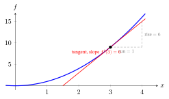
2. The rules you actually use
You almost never compute the limit by hand. A few rules cover everything in this series. For constants \(c\) and functions \(f,g\):
| Rule | Statement | Example |
|---|---|---|
| Constant | \(\frac{d}{dx}c = 0\) | flat line, no slope |
| Power | \(\frac{d}{dx}x^n = n\,x^{n-1}\) | \(\frac{d}{dx}x^2 = 2x\) |
| Constant multiple | \(\frac{d}{dx}\,c\,f = c\,f'\) | \(\frac{d}{dx}5x^2 = 10x\) |
| Sum | \((f+g)' = f' + g'\) | \(\frac{d}{dx}(x^2+x)=2x+1\) |
| Product | \((fg)' = f'g + fg'\) | \(\frac{d}{dx}\,x\,e^x = e^x + x e^x\) |
| Chain (next §) | \(\frac{d}{dx}f(g(x)) = f'(g)\,g'\) | see §3 |
Two functions recur in ML and have clean derivatives:
- Exponential: \(\frac{d}{dx}e^x = e^x\) (it is its own derivative).
- Logarithm: \(\frac{d}{dx}\ln x = \frac{1}{x}\) (this is why \(-\log\) losses are so convenient to differentiate — see Losses & Regularizers).
A point where \(f'(x)=0\) is a critical point (also stationary point): the slope is flat — a peak, a valley, or a plateau. Minimizing a loss = finding where its derivative is zero, which is the whole game in §5.
3. The chain rule — the engine of back-propagation
Functions are often nested: \(f(g(x))\) — “apply \(g\), then \(f\).” The chain rule says the derivative of the whole is the product of the derivatives along the chain:
\[ \frac{d}{dx}\,f\big(g(x)\big) \;=\; \underbrace{f'\big(g(x)\big)}_{\text{outer, at the inner value}} \times \underbrace{g'(x)}_{\text{inner}}. \]
Why “chain.” The composition \(x \to g \to f\) is a chain of steps; their rates multiply link by link, like gears. A neural network is just a long chain \(x \to \text{layer}_1 \to \text{layer}_2 \to \dots \to \text{loss}\), and back-propagation is the chain rule applied along it — multiply the per-layer derivatives from the loss backward to each weight. Master this one rule and backprop is no longer mysterious.
Worked example. \(f(x)=(3x+1)^2\). Outer is \((\cdot)^2\), inner is \(g(x)=3x+1\).
\[ f'(x) = \underbrace{2(3x+1)}_{\text{outer}'\text{ at }g} \times \underbrace{3}_{g'} = 6(3x+1). \]
At \(x=1\): \(f'(1)=6(3\cdot1+1)=6\cdot4=\boxed{24}\). (Check: \(f(x)=9x^2+6x+1\), so \(f'(x)=18x+6\), and \(18+6=24\) ✓ — two routes, same answer.)
When a value feeds several paths, the rates add. In a real network a value rarely flows down a single chain — one neuron’s output fans out to many downstream units. The chain rule then has a sum-over-paths form: if \(x\) reaches the output through several intermediates \(u_1,u_2,\dots\), add the contribution of each path:
\[ \frac{df}{dx} \;=\; \sum_i \frac{\partial f}{\partial u_i}\,\frac{d u_i}{dx}. \]
Worked example (a fork). Let \(a=2\) feed two branches, \(b=a^2\) and \(c=3a\), which recombine as \(L=b+c\). Two paths reach \(a\), so add them:
\[ \frac{dL}{da}=\underbrace{\frac{\partial L}{\partial b}\frac{db}{da}}_{1\,\cdot\,2a} +\underbrace{\frac{\partial L}{\partial c}\frac{dc}{da}}_{1\,\cdot\,3}=2a+3=\boxed{7}\quad(a=2). \]
(Check: \(L=a^2+3a\), so \(L'=2a+3=7\) ✓ — same answer.) This summing of gradients where paths meet is exactly what back-propagation does at every node that fans out — and it is why a layer’s Jacobian (§8) is a matrix: one entry per input–output path.
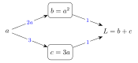
The two derivatives back-propagation multiplies most
The chain rule is not abstract: back-prop spends most of its time multiplying the derivatives of a few activation functions. Two are worth deriving once — you meet them in the Probability and Neural-Network notes, and this is the owning derivation they point back to.
Sigmoid, \(\sigma(z)=\dfrac{1}{1+e^{-z}}\). Write it as \((1+e^{-z})^{-1}\) and apply the chain rule (outer power, then inner \(\tfrac{d}{dz}e^{-z}=-e^{-z}\)):
\[ \sigma'(z)=-(1+e^{-z})^{-2}\cdot(-e^{-z})=\frac{e^{-z}}{(1+e^{-z})^{2}} =\underbrace{\frac{1}{1+e^{-z}}}_{\sigma}\cdot\underbrace{\frac{e^{-z}}{1+e^{-z}}}_{1-\sigma} =\boxed{\sigma(z)\big(1-\sigma(z)\big)}, \]
noting that \(1-\sigma(z)=\dfrac{e^{-z}}{1+e^{-z}}\) (subtract \(\sigma=\tfrac{1}{1+e^{-z}}\) from \(1\)) — making the factorization hand-checkable.
The famously clean \(\sigma'=\sigma(1-\sigma)\) — the derivative reuses the value you already computed. (Check at \(z=2\): \(\sigma=0.8808\), so \(\sigma'=0.8808\times0.1192=0.105\) ✓.)
ReLU, \(\max(0,z)\), is two straight pieces, so its derivative is each piece’s slope: \(\text{ReLU}'(z)=1\) for \(z>0\) and \(0\) for \(z<0\). At exactly \(z=0\) the two pieces meet at a kink, so no single slope exists (the left slope is \(0\), the right slope is \(1\)); any value in \([0,1]\) is a valid subgradient there — a stand-in slope for a point where the true derivative is undefined — and frameworks just pick \(0\). That on/off gradient is why a unit stuck at \(z<0\) stops learning — the “dead ReLU” of the Neural-Networks note.
A first taste of vanishing gradients — by the chain rule, with a number. Because \(\sigma'\) is largest when \(\sigma=0.5\), its biggest possible value is \(0.5\times(1-0.5)=0.25\) — a sigmoid never passes more than a quarter of the gradient through. Stack sigmoid layers and back-prop multiplies these per-layer rates (the chain rule above), so the gradient that reaches an early layer is at most \(0.25\) raised to the depth:
\[ 0.25^2=\tfrac{1}{16}=0.0625,\quad 0.25^4=\tfrac{1}{256}\approx0.0039,\quad 0.25^5=\tfrac{1}{1024}\approx0.00098 . \]
After just five sigmoid layers the early-layer gradient is down by a thousand-fold — it has all but vanished, and those layers barely learn. This single product is the whole intuition behind the vanishing-gradient problem (see also §8 for the matrix form); it is why ReLU (slope \(1\) on its live half, so it multiplies by \(1\), not \(0.25\)) and careful weight initialisation largely replaced the sigmoid in deep hidden layers.
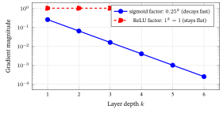
4. Partial derivatives and the gradient
ML functions have many inputs (a loss depends on millions of weights). For a function \(f(x,y,\dots)\) of several variables, a partial derivative \(\frac{\partial f}{\partial x}\) is the derivative with respect to one variable, holding the others fixed.
Why “partial.” You let only part of the input change (one knob), freezing the rest — so you see only part of the total variation. The curly \(\partial\) (“partial-dee”) distinguishes it from the ordinary \(d\) of one-variable calculus.
Stack all the partials into one vector and you get the gradient, written \(\nabla f\):
\[ \nabla f = \left[\frac{\partial f}{\partial x},\; \frac{\partial f}{\partial y},\; \dots\right]. \]
Why “gradient” and “\(\nabla\).” Gradient is from Latin gradus, “step / slope / grade” (as in the grade of a road). It is the multivariable slope. The symbol \(\nabla\) is called nabla (after an ancient harp of that shape) or del; \(\nabla f\) reads “del \(f\)” or “grad \(f\).”
Worked example. \(f(x,y)=x^2+xy\).
\[ \frac{\partial f}{\partial x}=2x+y \quad(\text{treat }y\text{ as constant}), \qquad \frac{\partial f}{\partial y}=x \quad(\text{treat }x\text{ as constant}). \]
At the point \((x,y)=(1,2)\): \(\;\nabla f = [\,2(1)+2,\;\;1\,] = \boxed{[4,\;1]}\).
This vector is the central object of training: the gradient of the loss with respect to the parameters tells the optimizer which way to move every parameter at once.
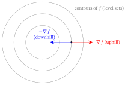
Why is \(\nabla f\) perpendicular to the contour — and why steepest? Walk along a contour and \(f\) doesn’t change, so the rate of change in that direction is \(0\). The rate of change in any direction \(\hat{\mathbf d}\) is the directional derivative \(\nabla f\cdot\hat{\mathbf d}\) (a dot product, Linear-Algebra primer §4), which is largest when \(\hat{\mathbf d}\) aligns with \(\nabla f\) and zero when it is perpendicular. So zero change is along the contour, and fastest change is the direction perpendicular to it — exactly where \(\nabla f\) points.
Worked example — directional derivative. Reuse \(f(x,y)=x^2+xy\) at \((1,2)\) where \(\nabla f=[4,1]\) (from above).
- Along \(x\): take \(\hat{\mathbf d}=(1,0)\) (the unit vector pointing right). The directional derivative is \(\nabla f\cdot\hat{\mathbf d}=[4,1]\cdot[1,0]=4\cdot1+1\cdot0=4\) — which matches \(\tfrac{\partial f}{\partial x}=4\) exactly, as it should: \(\hat{\mathbf d}=(1,0)\) is the \(x\) direction.
- Along the contour: a vector perpendicular to \(\nabla f=[4,1]\) is \(\hat{\mathbf d}_\perp=\tfrac{1}{\sqrt{17}}(-1,4)\) (rotate \(90°\)). Then \(\nabla f\cdot\hat{\mathbf d}_\perp=[4,1]\cdot\tfrac{1}{\sqrt{17}}(-1,4)=\tfrac{-4+4}{\sqrt{17}}=0\). Rate of change along the contour is exactly zero — \(f\) is constant there — which is precisely why the gradient is perpendicular to the contour.
5. The gradient points uphill → gradient descent
§2 said minimizing means finding where the derivative is zero — so why not just solve \(\nabla f(\theta)=\mathbf 0\)? Because a real loss has millions of parameters and is nonlinear, so \(\nabla f=\mathbf 0\) is millions of coupled nonlinear equations with no closed-form solution. Instead of solving, we search: start somewhere and repeatedly step downhill.
Here is the fact that makes machine learning work:
The gradient \(\nabla f\) points in the direction of steepest increase of \(f\), and its negative \(-\nabla f\) points in the direction of steepest decrease.
So to minimize a loss, repeatedly take a small step against the gradient:
\[ \theta \;\leftarrow\; \theta \;-\; \eta\,\nabla f(\theta). \]
- \(\theta\) — the parameters (weights / embeddings) you are tuning.
- \(\nabla f(\theta)\) — the gradient at the current point (which way is uphill).
- \(\eta\) (the Greek letter eta — pure convention, as \(\alpha,\beta\) were already taken for other constants, so don’t read meaning into the letter) — the learning rate (step size): how far to step.
- The minus sign — go downhill, opposite the uphill gradient.
Why the names. Gradient descent — you descend the slope the gradient reveals. Learning rate — \(\eta\) controls how fast the model “learns” each step: too small and training crawls; too large and it overshoots and diverges.
Worked example — minimize \(f(x)=x^2\) by hand (here \(\nabla f = f'(x)=2x\)), starting at \(x_0=3\) with \(\eta=0.1\):
| step | \(x\) | \(f'(x)=2x\) | update \(x-\eta f'(x)\) | \(f(x)=x^2\) |
|---|---|---|---|---|
| 0 | \(3.000\) | \(6.00\) | \(3-0.1(6.00)=2.400\) | \(9.000\) |
| 1 | \(2.400\) | \(4.80\) | \(2.4-0.1(4.80)=1.920\) | \(5.760\) |
| 2 | \(1.920\) | \(3.84\) | \(1.92-0.1(3.84)=1.536\) | \(3.686\) |
| 3 | \(1.536\) | — | — | \(2.359\) |
The value marches downhill \(9 \to 5.76 \to 3.686 \to 2.359\) (the last column, matching the figure below), heading for the true minimum at \(x=0\). This is the training loop of every model in the book — applied not to one number \(x\) but to a whole parameter vector \(\theta\), with the gradient from §4. (Losses & Regularizers §3 re-tells this story in ML terms; the engine is exactly the table above.)
In practice — SGD. A real loss is an average over millions of examples, so the exact \(\nabla f\) each step is too costly. Stochastic gradient descent (SGD) estimates the gradient on a small random minibatch and steps on that — noisier, far cheaper, and what every model in the series actually trains with. Smarter step rules (momentum, Adam) build on it; the Neural-Networks note covers them.
In practice — autograd, schedulers, and gradient pathologies. Nobody applies the chain rule by hand in real ML. PyTorch and JAX use automatic differentiation (autograd): as each operation runs, the framework records the computation graph;
loss.backward()then walks that graph in reverse and writes the chain-rule product into every parameter’s.gradattribute. An optimizer (torch.optim.SGD,torch.optim.Adam) reads those.gradvalues and applies the step \(\theta \leftarrow \theta - \eta\,\nabla f\) you derived here. The learning rate \(\eta\) is rarely constant: a typical schedule uses a short warm-up (small \(\eta\) at first, so early noisy gradients don’t destroy random initialisation) followed by decay (cosine or step-wise drop, so later updates settle finely). Two failure modes worth knowing: if \(\|\nabla f\|\) grows without bound across layers — exploding gradients — clip it (set a ceiling on the norm); if it shrinks toward zero — vanishing gradients — layer normalisation and residual connections help (covered in Losses & Regularizers and the Neural-Networks note).
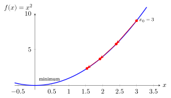
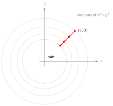
The learning rate is the first knob you tune. Same loss \(f(x)=x^2\), same start \(x_0=3\) — only \(\eta\) changes:
| \(\eta\) | \(x\) across steps \(0\!\to\!3\) | behaviour |
|---|---|---|
| \(0.1\) (too small) | \(3 \to 2.4 \to 1.92 \to 1.54\) | safe, but crawls toward \(0\) |
| \(0.5\) (large but stable) | \(3 \to 0 \to 0 \to 0\) | lands on \(0\) in one step here (see caveat below) |
| \(1.1\) (too large) | \(3 \to -3.6 \to 4.32 \to -5.184\) | overshoots and diverges |
Too small wastes compute; too large blows up. The one-step landing at \(\eta=0.5\) is special to this quadratic (\(\eta=1/f''\) exactly minimizes a parabola) — real losses are tuned for steady descent, not a one-shot jump. §7 shows why a small-enough step is guaranteed to lower \(f\).
And in two dimensions it is the same picture: the gradient \(\nabla f=[2x,2y]\) sends each coordinate down the very \(3\to2.4\to1.92\) path of the table above, sliding the whole point straight to the minimum:
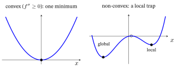
6. Curvature: second derivatives, the Hessian, convexity
Differentiate twice and you get the second derivative \(f''(x)\) — the rate of change of the slope, i.e. curvature (how the curve bends).
- \(f''>0\): slope increasing → curve bends up (a valley / “cup”).
- \(f''<0\): slope decreasing → curve bends down (a hill / “cap”).
Two words we will keep using: a local minimum is lowest only within its own neighbourhood (a valley floor), while a global minimum is the lowest point anywhere. A bumpy (non-convex) loss can have many local minima but only the deepest is global — and plain gradient descent, which only ever steps downhill, can come to rest in whichever valley it happens to fall into.
A function is convex if it curves up everywhere (\(f''\ge 0\)) — a bowl shape. Convexity is the property optimizers dream of:
A convex function has exactly one valley — so gradient descent cannot get stuck in a wrong local minimum. Every critical point (a place where the gradient is zero — the function momentarily stops changing, so its fate is “critical”: min, max, or saddle) is the global minimum.
In many variables there is no single \(f''\) to check — there is a whole Hessian matrix (below). The multivariable convexity test is the matrix version of “\(f''\ge 0\)”:
\(f\) is convex exactly when its Hessian is positive semidefinite (PSD) at every point. PSD is the matrix way of saying “\(\ge 0\) in every direction”: \(\mathbf{x}^{\!\top}\! H\mathbf{x}\ge 0\) for all \(\mathbf{x}\), equivalently all eigenvalues of \(H\) are \(\ge 0\) (the full PSD definition lives in the Linear-Algebra primer §6; here we just read off the eigenvalue signs).
So curvature that is \(\ge 0\) in every direction (PSD) is a bowl with one bottom; if some direction curves up and another curves down (mixed eigenvalue signs, an indefinite Hessian) the critical point is a saddle, not a minimum.
Why “convex” and “Hessian.” Convex is from Latin convexus, “vaulted, arched” — the bowl/cup shape. The multivariable second-derivative object — the matrix of all second partials \(\frac{\partial^2 f}{\partial x_i\,\partial x_j}\) — is the Hessian, named after the 19th-century mathematician Otto Hesse.
Worked examples.
- \(f(x)=x^2 \Rightarrow f''(x)=2 \ge 0\) everywhere → convex (a single bowl; that is why §5 converged cleanly).
- \(f(x)=x^3 \Rightarrow f''(x)=6x\), which is negative for \(x<0\) and positive for \(x>0\) → not convex (it changes bending; the point \(x=0\) where \(f''\) flips sign is an inflection point).
- Hessian of \(f(x,y)=x^2+xy\) (from §4, where \(\nabla f=[2x+y,\;x]\)): \[ H = \begin{bmatrix} \partial^2_{xx} & \partial^2_{xy} \\ \partial^2_{yx} & \partial^2_{yy} \end{bmatrix} = \begin{bmatrix} 2 & 1 \\ 1 & 0 \end{bmatrix}. \]
Per component: entry \((i,j)\) is how the slope in direction \(i\) changes as you nudge direction \(j\) — the diagonal is pure curvature along each axis, the off-diagonals are how the axes interact. The bottom-right \(0\) here says \(f=x^2+xy\) is linear in \(y\) once \(x\) is fixed (no \(y^2\) term → no curvature that way); the two \(1\)s are the \(xy\) cross-term.
The Hessian is symmetric — \(\partial^2_{xy}=\partial^2_{yx}\) — so the eigen-tools of the Linear-Algebra primer apply, and its eigenvalues’ signs classify the critical point. Let us actually read them off for our two examples:
- \(f(x,y)=x^2+y^2\) (the bowl of §5) has \(H=\begin{bmatrix}2&0\\0&2\end{bmatrix}\), eigenvalues \(2,2\) — both positive, so \(H\) is PSD (here positive definite) and \(f\) is convex: a bowl with one bottom. You can see the “\(\ge0\) in every direction” directly: \(\mathbf{x}^{\!\top}\! H\mathbf{x}=2x^2+2y^2\ge0\) always.
- \(f(x,y)=x^2+xy\) (just above, \(H=\begin{bmatrix}2&1\\1&0\end{bmatrix}\)) is the contrast. Its characteristic equation is \(\det(H-\lambda I)=(2-\lambda)(-\lambda)-1=\lambda^2-2\lambda-1=0\), giving \(\lambda=1\pm\sqrt2\approx\{+2.41,\,-0.41\}\) — one positive, one negative. Mixed signs mean the Hessian is indefinite: \(f\) curves up along one direction and down along another, like a horse’s saddle. So this critical point is neither a max nor a min — a saddle, and \(f\) is not convex.
The figure below draws the cleanest saddle, \(f(x,y)=x^2-y^2\) (Hessian \(\begin{bmatrix}2&0\\0&-2\end{bmatrix}\), eigenvalues \(+2,-2\) — same mixed-sign story, but axis-aligned so the two slices are easy to see).
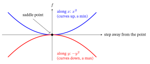
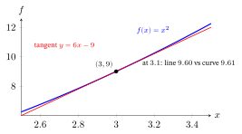
7. Linear approximation and Taylor — why a downhill step works
Zoom in on any smooth curve (one with a derivative everywhere — no kinks or jumps) and it looks straight. That straight piece is the linear (or first-order Taylor) approximation:
\[ f(x+\delta) \;\approx\; f(x) + f'(x)\,\delta \qquad (\text{small } \delta). \]
Why “Taylor.” After Brook Taylor (1715), who showed a smooth function near a point equals its value plus slope\(\times\)step plus (curvature\(/2)\times\)step\(^2\) plus … . Keep just the slope term and you have the linear approximation.
Worked example. \(f(x)=x^2\) near \(x=3\) (\(f'(3)=6\)), estimate \(f(3.1)\):
\[ f(3.1)\approx f(3)+f'(3)(0.1)=9+6(0.1)=\mathbf{9.6}, \qquad \text{actual } 3.1^2=9.61. \]
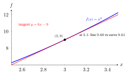
Off by only \(0.01\). This is the guarantee behind gradient descent. The multivariable first-order Taylor is \(f(\theta+\delta)\approx f(\theta)+\nabla f\cdot\delta\) — and chained in three steps it proves a downhill step works:
- \(\nabla f\cdot\delta\) is the predicted change in \(f\) for a step \(\delta\) — the dot product (Linear-Algebra primer §4) of the uphill direction \(\nabla f\) with where you actually move.
- Choose the step straight downhill: \(\delta=-\eta\nabla f\) (against the gradient, scaled by the learning rate \(\eta\)).
- Substitute: \(\nabla f\cdot(-\eta\nabla f)=-\eta\lVert\nabla f\rVert^2\), so \(f(\theta-\eta\nabla f)\approx f(\theta)-\eta\lVert\nabla f\rVert^2\). A squared length \(\lVert\nabla f\rVert^2\) can’t be negative, so the change is \(\le 0\): the step provably lowers \(f\) (as long as \(\eta\) is small enough to trust the straight-line approximation — exactly what the learning rate controls). Formally, a small-enough \(\eta\) exists whenever the gradient doesn’t change too fast — i.e. \(\lVert\nabla f(x)-\nabla f(y)\rVert \le L\lVert x-y\rVert\) for some constant \(L\) (the function is Lipschitz-smooth), which the losses in this book satisfy.
How fast does it break down? The linear approximation’s error is second order — it grows like the square of the step. For \(f(x)=x^2\) linearized at \(x_0=3\) (tangent \(L(x)=6x-9\)) the error is exactly \[ f(x)-L(x)=x^2-(6x-9)=(x-3)^2, \] the curvature term Taylor dropped. So it is tiny nearby but blows up quadratically: at \(x=3.1\) the error is \(0.01\); at \(3.5\), \(0.25\); at \(4\), \(1.0\); at \(5\), \(4.0\). That is why a downhill step is only trustworthy when it is small — double the step and you quadruple the surprise; the learning rate \(\eta\) is what keeps the step inside the region where the line is a faithful stand-in for the curve.
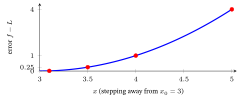
8. The Jacobian — vector in, vector out
A neural-network layer takes a vector in and puts a vector out. The derivative of a vector-valued function \(F:\mathbb{R}^n\to\mathbb{R}^m\) is a matrix of all partials — the Jacobian:
\[ J_{ij} = \frac{\partial F_i}{\partial x_j}, \qquad J \in \mathbb{R}^{m\times n} \;(\text{one row per output, one column per input}). \]
Why “Jacobian.” Named after Carl Gustav Jacob Jacobi. It is the natural generalization of the gradient: a gradient is the Jacobian of a scalar output (one row); stack many such rows for many outputs.
Worked example. Promote §4’s two pieces, \(x^2\) and \(xy\), into one vector output \(F(x,y)=\big[\,x^2,\; xy\,\big]\):
\[ J=\begin{bmatrix} \partial_x(x^2) & \partial_y(x^2) \\ \partial_x(xy) & \partial_y(xy)\end{bmatrix} =\begin{bmatrix} 2x & 0 \\ y & x\end{bmatrix} \;\xrightarrow{(1,2)}\; \begin{bmatrix} 2 & 0 \\ 2 & 1\end{bmatrix}. \]
Per component: \(J_{ij}\) is how much output \(i\) moves when you nudge input \(j\), so row \(i\) is the gradient of output \(i\) (row 1 is exactly §4’s \(\nabla(x^2)=[2x,0]\)). The top-right \(0\) says output \(x^2\) ignores \(y\) — the very same fact as the Hessian’s \(0\) corner in §6.
Why it matters: the chain rule for vectors is matrix multiplication of Jacobians. Back-propagation through a deep network multiplies each layer’s Jacobian, right to left, from the loss back to every weight — the §3 chain rule, now in matrix form (the matrix product is from the Linear-Algebra primer). Multiplying many such factors is double-edged: if they are mostly \(<1\) the product vanishes toward \(0\) (early layers stop learning); if mostly \(>1\) it explodes — the vanishing/exploding-gradient problem Representation Learning & the Transformer tackles for long sequences.
9. Integration, in one paragraph (the bridge to probability)
Integration is the reverse of differentiation: where the derivative takes a function to its slope, the integral \(\int_a^b f(x)\,dx\) sums infinitely many thin slices to give the area under the curve between \(a\) and \(b\). Why “integral”: from Latin integer, “whole” — you integrate (make whole) the slices into one total. This is exactly what the Probability primer needs: for a continuous distribution the area under the density (PDF) is a probability, and an expectation is an integral, \(\mathbb{E}[X]=\int x\,p(x)\,dx\) — the continuous twin of the weighted-average sum. We use that fact in the Probability primer; here we only need to know an integral is “area = the accumulated total.”
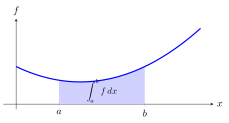
10. Exercises
Work these by hand — the numbers are kept tiny on purpose. Full worked solutions are in the Solutions appendix at the back of the book.
(compute) Compute the derivative of \(f(x)=x^2\) at \(x=2\) from the limit (§1): simplify the difference quotient \(\dfrac{(2+h)^2-2^2}{h}\) to a form with no \(h\) in the denominator, then let \(h\to0\). Check your answer against the power rule \(f'(x)=2x\) (§2).
(compute) Use the product rule \((fg)'=f'g+fg'\) (§2) on \(f(x)=x^2(x+1)\) (take the two factors \(x^2\) and \(x+1\)). At \(x=2\), evaluate \(f'(2)\). Check by first multiplying out \(f(x)=x^3+x^2\) and differentiating — the two routes should agree.
(compute) Apply the chain rule (§3) to \(f(x)=(2x+1)^3\) (outer \((\cdot)^3\), inner \(g(x)=2x+1\)) to get \(f'(x)\), then evaluate \(f'(1)\). (Mirror the chapter’s \((3x+1)^2\) worked example; you can check by expanding \(f\) and differentiating.)
(compute) The sigmoid is \(\sigma(z)=\dfrac{1}{1+e^{-z}}\) with derivative \(\sigma'(z)=\sigma(z)\big(1-\sigma(z)\big)\) (§3). Evaluate \(\sigma\) and \(\sigma'\) at \(z=0\) (where \(\sigma(0)=\tfrac12\)). What is the largest value \(\sigma'\) can ever take, and at which \(\sigma\)? Separately, state the ReLU derivative \(\text{ReLU}'(z)=\max(0,z)'\) for \(z>0\) and for \(z<0\) (§3).
(compute) For \(f(x,y)=x^2+xy\) (the chapter’s example, §4) write the two partial derivatives \(\frac{\partial f}{\partial x}\) and \(\frac{\partial f}{\partial y}\), then assemble the gradient \(\nabla f\) at the point \((x,y)=(2,3)\).
(concept) Form the Hessian (§6) of each of \(f(x,y)=x^2+3y^2\) and \(g(x,y)=xy\), read off its eigenvalues (both are easy: one matrix is diagonal, the other is \(\left[\begin{smallmatrix}0&1\\1&0\end{smallmatrix}\right]\)), and from the signs of those eigenvalues classify each critical point as a convex bowl (a minimum) or a saddle. State which one is not convex and why.
(concept) §3 shows a sigmoid passes at most \(0.25\) of the gradient through (\(\sigma'\le0.25\)), and back-propagation multiplies these per-layer rates. Without a calculator beyond powers of \(\tfrac14\), give the largest gradient that can reach the earliest layer after 4 stacked sigmoid layers, i.e. \(0.25^4\), as a fraction \(1/n\). In one sentence, explain why this product shrinking toward zero is the vanishing-gradient problem — and why a ReLU’s live-half slope of \(1\) avoids it.
(extend) Run two steps of gradient descent on \(f(x)=x^2\) (so \(f'(x)=2x\)) from \(x_0=2\) with the chapter’s \(\eta=0.1\), using \(x\leftarrow x-\eta f'(x)\) (§5); report \(x_1\), \(x_2\), and \(f(x_2)\). Then for the first step verify the §7 guarantee: the first-order Taylor prediction of the change, \(f'(x_0)\cdot\delta\) with \(\delta=-\eta f'(x_0)\), is negative — so the step provably lowers \(f\).
(extend) Build the Jacobian (§8) of the vector-valued \(F(x,y)=\big[\,xy,\ x+y^2\,\big]\): write the \(2\times2\) matrix \(J_{ij}=\partial F_i/\partial x_j\) symbolically, then evaluate it at \((x,y)=(2,3)\). Confirm that row \(1\) of your matrix is exactly the gradient of the first output \(xy\).
(apply) A model has a single weight \(w\) and one training example \((x,t)=(2,1)\), with squared-error loss \(L(w)=(wx-t)^2=(2w-1)^2\). Starting from \(w_0=0\) with \(\eta=0.1\): compute the gradient \(\dfrac{dL}{dw}\) at \(w_0\) (use the chain rule, §3), take one gradient-descent step \(w\leftarrow w-\eta\,\frac{dL}{dw}\) (§5), and confirm the loss dropped by evaluating \(L\) before and after. This is one literal step of the training loop every model in the book runs.
(compute) — how fast the linear approximation breaks down. Linearize \(f(x)=x^2\) at \(x_0=2\); the tangent is \(L(x)=4x-4\) (§7). Compute \(L\) and the true \(f\) at \(x=2.5\) and \(x=3\), and the error \(f-L\) each time. Confirm the error equals \((x-2)^2\) — the dropped second-order term.
(concept) — which losses are convex? A function is convex when \(f''(x)\ge0\) everywhere (§6). For each, give \(f''\) and the verdict: (a) \(f(x)=x^4\), (b) \(f(x)=x^3\), (c) \(f(x)=e^{x}\),
- \(f(x)=-x^2\).
(apply) — the learning rate that converges. On \(f(x)=x^2\) (\(f'=2x\)) the gradient step is \(x\leftarrow x-\eta(2x)=(1-2\eta)x\) (§5). (a) For which \(\eta\) does the iterate shrink toward \(0\), i.e. \(|1-2\eta|<1\)? (b) What does \(\eta=1\) do, and \(\eta=1.5\)? (c) Why is \(\eta=0.5\) special here?
11. Where this fits in the book
| Calculus idea (here) | Where it is used | Why it matters there |
|---|---|---|
| Derivative / slope (§1–2) | Losses & Regularizers §3 gradient descent | “minimize the loss” = drive the derivative to 0 |
| Chain rule (§3) | neural-net back-propagation; Losses & Regularizers | multiply per-layer rates → train deep models |
| Partial derivatives, gradient (§4) | every training loop in the book | one direction that updates all parameters |
| Gradient descent (§5) | Losses & Regularizers §3; LightGCN/RLMRec training | the actual optimizer behind every learned embedding |
| Second derivative, convexity (§6) | Losses & Regularizers (why MSE/convex losses are “nice”) | convex ⇒ one global optimum; no bad local minima |
| Hessian (§6) | optimization, curvature; pairs with eigen (LA primer) | bowl vs. saddle; conditioning of training |
| Taylor / linear approx. (§7) | the guarantee behind a descent step | a small step against the gradient lowers the loss |
| Jacobian (§8) | backprop through layers (matrix chain rule) | vector-in/vector-out derivatives = matrix products |
| Integral = area (§9) | Probability primer (PDF → probability, \(\mathbb{E}\)) | continuous probabilities and expectations |
Carry this into the rest of the book: a derivative is a slope; the gradient is the slope in many dimensions and points uphill; the chain rule multiplies slopes along a chain; training is just stepping downhill (\(\theta \leftarrow \theta-\eta\nabla f\)) on a (hopefully convex) loss.
12. Glossary
| Term | Plain meaning |
|---|---|
| Derivative \(f'(x)\) | Instantaneous rate of change = slope of the curve at a point. |
| Differentiate | Compute a derivative (limit of differences). |
| Difference quotient | \(\frac{f(x+h)-f(x)}{h}\) — rise over run before taking \(h\to0\). |
| Limit | The value a quantity approaches (here as the run \(h\to0\)). |
| Critical / stationary point | Where \(f'(x)=0\): peak, valley, or plateau. |
| Chain rule | Derivative of \(f(g(x))\) = \(f'(g)\cdot g'\); the basis of back-propagation. |
| Partial derivative \(\partial f/\partial x\) | Derivative wrt one variable, others held fixed. |
| Gradient \(\nabla f\) | Vector of all partials; points in the direction of steepest increase. |
| Nabla / del (\(\nabla\)) | The symbol for the gradient operator. |
| Gradient descent | \(\theta\leftarrow\theta-\eta\nabla f\): step against the gradient to minimize. |
| Learning rate \(\eta\) | Step size in gradient descent. |
| Stochastic gradient descent (SGD) | Gradient descent on a noisy gradient estimated from a random minibatch, not the full dataset. |
| Second derivative \(f''\) | Rate of change of the slope = curvature. |
| Convex | Curves up everywhere; one variable \(f''\ge0\), many variables Hessian PSD; bowl-shaped; one global minimum. |
| Local / global minimum | Local = lowest within a neighbourhood; global = lowest anywhere. |
| Saddle point | Critical point that is a min in some directions, a max in others (indefinite Hessian). |
| Positive semidefinite (PSD) | A symmetric matrix with \(\mathbf x^{\!\top}\!H\mathbf x\ge0\) for all \(\mathbf x\) (all eigenvalues \(\ge0\)); the multivariable “\(\ge0\)” that makes a Hessian convex. |
| Indefinite | A symmetric matrix with both positive and negative eigenvalues (curves up some ways, down others) — the Hessian at a saddle. |
| Subgradient | A stand-in slope at a kink where the true derivative is undefined (e.g. any value in \([0,1]\) for ReLU at \(0\)). |
| Inflection point | Where \(f''\) changes sign (the curve switches between bending up and down). |
| Hessian \(H\) | Matrix of second partial derivatives (multivariable curvature). |
| Taylor / linear approximation | \(f(x+\delta)\approx f(x)+f'(x)\delta\); a curve looks straight up close. |
| Smooth | Has a derivative everywhere — no kinks or jumps; looks straight up close. |
| Directional derivative | Rate of change of \(f\) along a unit direction \(\hat{\mathbf d}\): \(\nabla f\cdot\hat{\mathbf d}\). |
| Jacobian \(J\) | Matrix of partials of a vector-valued function (rows=outputs, cols=inputs). |
| Integral \(\int\) | Area under a curve; the reverse of differentiation; gives probabilities/expectations. |
13. References
- Deisenroth, M. P., Faisal, A. A., & Ong, C. S. (2020). Mathematics for machine learning. Cambridge University Press. https://mml-book.github.io/
- MIT (2026). 6.390 Introduction to Machine Learning — lecture notes. Course notes. https://introml.mit.edu/
- Stanford (2026). CS229 Machine Learning — supplementary notes. Course notes. https://cs229.stanford.edu/
- Stewart, J. (2015). Calculus (8th ed.). Cengage Learning.
Online sources verified June 2026.